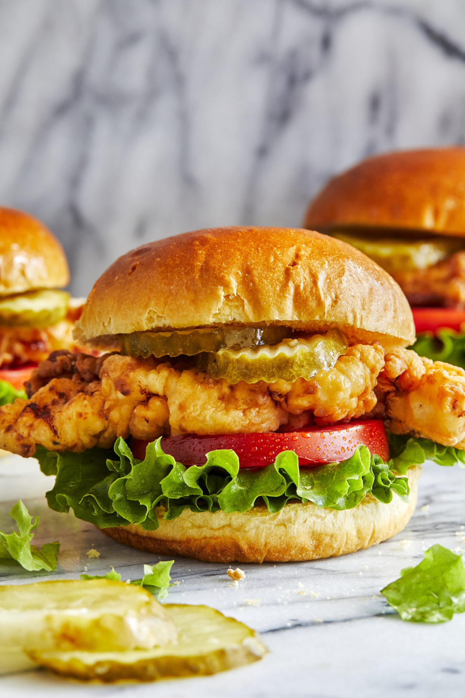

Chic-Fil-A Chicken Sandwich

Description
Meal Description
Meal Description
2 boneless, skinless chicken breasts
1 cup dill pickle juice
1 1/2 cups milk, divided
1 cup peanut oil
1 large egg
1/2 cup all-purpose flour
Kosher salt and freshly ground black pepper, to taste
4 hamburger buns, split
1 head green leaf lettuce, leaves separated
1 beefsteak tomato, sliced
Dill pickle slices
Instructions
Place a chicken breast on a cutting board. With your hand flat on top of it, carefully slice the chicken in half horizontally. Trim excess fat as needed.
In a large shallow baking dish, combine chicken, pickle juice and 1/2 cup milk; marinate for at least 30 minutes. Drain well.
Heat peanut oil in a large skillet over medium high heat.
In another large shallow baking dish, whisk together remaining 1 cup milk and egg. Stir in chicken to coat and drain excess milk mixture.
In a gallon size Ziploc bag or large bowl, combine chicken, flour and confectioners sugar; season with salt and pepper, to taste.
Working in batches, add chicken to the skillet and cook until evenly golden and crispy, about 4-5 minutes. Transfer to a paper towel-lined plate.
Serve chicken immediately on burger buns with green leaf lettuce, tomato and pickles.